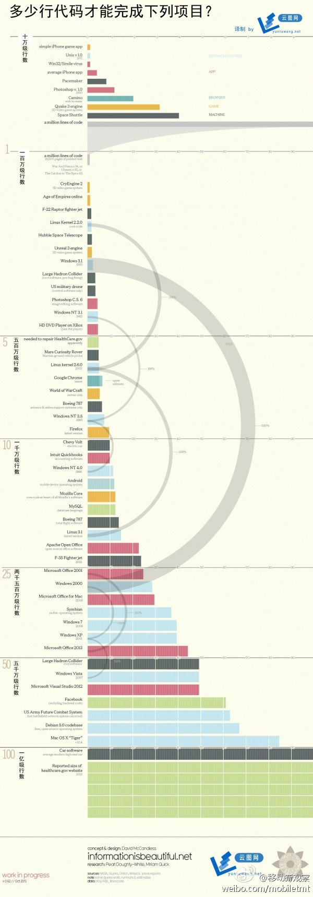

看了这么多的评论和转发，想起今天刘老师说请教过Ubuntu做社区的经验，回复说给社区提供个有缺陷的版本，会有很多人来帮着修改或者喷。刘老师，今晚涨了多少粉？@刘江总编:不会只有我一个人觉得足球亚冠这种荣誉其实不值一提吧，何况基本还是靠外援。
//@2gua:不同的人看问题分析问题的角度果然不同，Ada姐，以后我就跟你混了…… //@Ada李力: 看了这么多的评论和转发，想起今天刘老师说请教过Ubuntu做社区的经验，回复说给社区提供个有缺陷的版本，会有很多人来帮着修改或者喷。刘老师，今晚涨了多少粉？@刘江总编:不会只有我一个人觉得足球亚冠这种荣誉其实不值一提吧，何况基本还是靠外援。
//@陈果_George:回复@吴教授HR: Gallup的员工敬业度employee engagement的调查还是有很强的严谨性的，敬业度准确说应该叫“企业忠诚度”，中国员工对企业忠诚度不高我觉得是现实。 //@吴教授HR:同意项总的观点。今天是周末，领导们还在开会。@飞象网项立刚:今天又看众多媒体跟了美国人炒什么中国人敬业世界最低。你TM能少弱智一点吗？中国是世界上经济增长最快的实体之一，全世界的工厂，中国人不敬业，不敬业这些东西天上掉下来的？全世界工厂，象中国这样管理水平，基本没有。人家搞个狗屁指标，你马上跟着在后面叫，你做个媒体，没有长人脑子？
衡量敬业度，用哪几个指标，才值得商榷。//@尹锴_ink:忠诚度，只是表象。劳务市场供求关系，才是本质。GDP连续20年高速增长，工业产出两位数增长，相应劳务市场必然供不应求。供不应求必然带来高劳务流动性。@飞象网项立刚:今天又看众多媒体跟了美国人炒什么中国人敬业世界最低。你TM能少弱智一点吗？中国是世界上经济增长最快的实体之一，全世界的工厂，中国人不敬业，不敬业这些东西天上掉下来的？全世界工厂，象中国这样管理水平，基本没有。人家搞个狗屁指标，你马上跟着在后面叫，你做个媒体，没有长人脑子？
//@梁颖_行云流水:CSDN高校俱乐部旨在为广大大学生提供学习成长与竞技的舞台，提供与行业接轨的社会实践平台，让大学生在学有所成的基础上快速对接企业需求，实现个人技能向企业价值的成功转化。如果您的企业有实习生需求，不分地域，欢迎参与我们的调查问卷。@CTO俱乐部:CTO俱乐部和@CSDN高校俱乐部 将再次合作推出“实习生或兼职推荐”项目，为提前了解会员公司对实习生或兼职的需求状况，便于以后我们推荐更合适的学生，现邀请您参与此次调查。您的参与将为企业赢得入围第一批推荐企业的机会，方便快捷获得实习人才 @CSDN @Ada李力 @梁颖_行云流水 网页链接
昨天听到的妙论：某大央企在每几次新机会出现时，都能做出很好的规划，但最后都不了了之，难于推动的原因在于人。外企民企启动新战略的方式通常是换人，而国企很难裁人，只能尝试改变现有员工的思想。— 改变人的思想，可是太TM难干的事情了。
手机上才装了80多个应用，手机8G的空间就经常提示空间不够，更糟糕的是新应用装不上了。周末用工具清理，能移到SD卡的应用都移到过去，删掉一些不常用应用，还是空间不够。— 那些号称手机装几百个应用的，是用的什么手机?
华为Mate满足了我的两个需求，大屏，待机时间长。但使用起来就是小毛病不断，充电器线没多久就坏了，电话经常无缘无故断掉，系统自带的应用商店莫名挂掉，提示空间不足的消息消不掉。升次Emotion UI, 图片全乱了，蓝牙设置也丢掉。优点也有，皮实，被我几次从高处落下，捡起来发现木事。
其实outlet那地方东西未必便宜，在香港正式商场的专卖店，那些高价品该有的折扣一样有，而且，购物环境好很多，店员服务也是星际水平的。@Ada李力:朋友说香港九龙某outlet店人潮汹涌，几乎都是大陆过去扫货的，店员像看贼一样看店，谈不上什么服务。如果几千上万的奢侈品，购物体验如菜市场，我挺难理解去买得什么？ 只是便宜吗？
Windows软件的代码量增加，很多花在了考虑兼容性问题上吧。@物联网那点事:多少行代码才能完成下列项目?据统计平均1个iPhone App是4万行代码,PS CS6是5百万行,facebook的总体项目则高达6000多万行代码!我们也可从这张信息图中看到早期的Win3.1只有200多万行代码,到了Vista年代则是将近5000万行,也能看出Win7比Viata精简了许多@Ada李力@CSDN张宁@51CTO移动开发@IT168企业级频道 